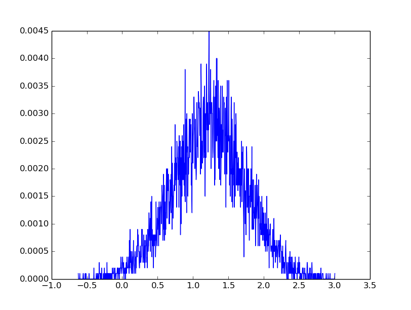

中心极限定理
如果将大量服从某种分布的值叠加起来, 所得到的和会收敛到正态分布. 这个定理成立需要满足一定条件:
- 用于求和的数据必须满足独立性
- 数据必须服从同一个分布(这个要求可以被适当地放松, 比如每个变量不必服从同一个分布)
- 产生这些数据分布的均值和方差必须是有限的
- 收敛速度取决于原来分布的偏度. 如果数据服从指数分布, 那么这些数据的和就会收敛很快; 但如果数据服从对数正态分布, 那么收敛速度就没有那么快了.
中心极限定理部分解释了为什么正态分布在自然界中广泛存在. 绝大多数动物(或是其他生命形式)的特征比如体重, 都会受到大量遗传和环境因素的影响, 而且这些影响是具有可加性的. 我们观测到的这些特征是大量微观因素的叠加, 所以他们都近似地服从正态分布
#!/usr/bin/env python
#coding:utf-8
#Copyright (C) dirlt
# https://en.wikipedia.org/wiki/Central_limit_theorem
import matplotlib.pyplot as plt
import random
import numpy as np
def pdf(ps):
bucket_n = 1000
mx = max(ps)
mn = min(ps)
interval = (mx - mn) / bucket_n
vs = [0] * bucket_n
for p in ps:
off = int((p - mn) / interval)
if off >= bucket_n: off = bucket_n - 1
vs[off] += 1
vs = map(lambda x: x * 1.0 / len(ps), vs)
return vs
streams = [{'func': random.expovariate,
'args': [(1.0,), (2.0,), (3.0,), (4.0,)]},
{'func': random.gauss,
'args': [(2.0, 1.0), (1.0, 2.0), (3.0, 4.0), (2.0, 4.0)]},
{'func': random.paretovariate,
'args': [(5.0,), (6.0,), (7.0,), (8.0,)]}]
def gen():
values = []
for s in streams:
f = s['func']
args = s['args']
values.extend(map(lambda x: apply(f, x), args))
return sum(values) * 1.0 / len(values)
N = 10000
ps = np.array([gen() for i in xrange(0, N)])
vs = np.array(pdf(ps))
xs = np.arange(ps.min(), ps.max(), (ps.max() - ps.min()) * 1.0 / vs.size)
print('mean = {}, std ={}'.format(ps.mean(), ps.std()))
plt.plot(xs, vs)
plt.show()
mean = 1.23274131597, std =0.515295913956
